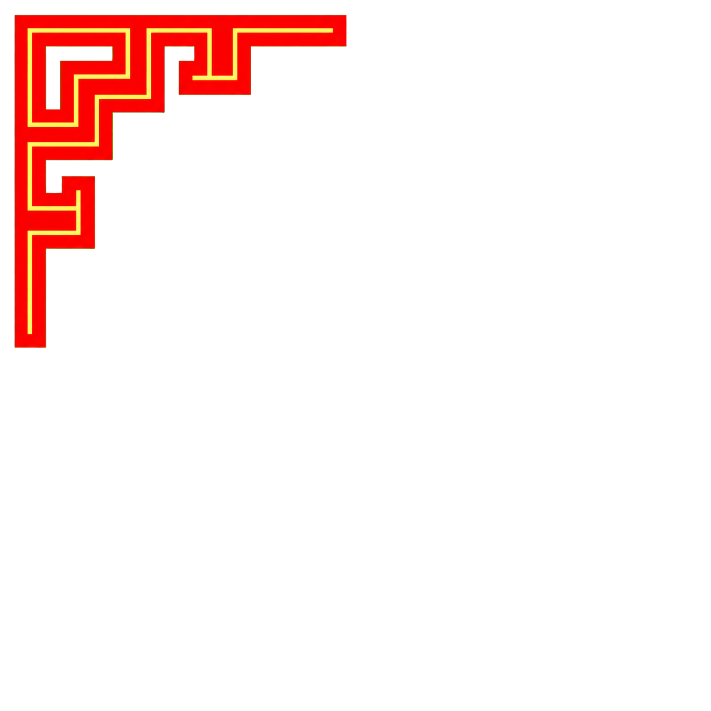

这一节是全卷最重要的一页。用错口径，会把一整条派系线写到分场才发现一句原文都引不出来。
| 口径 | 问题 |
|---|---|
registry.json 的 charCount |
46 本里 11 本与文件实际不符；且对 6 本「真原文为 0」的书仍标 109–188 字，会让人误以为有东西。前端还拿它显示与排序。 |
texts/*.json 的 fragments 总字数 |
把编者导读（简体）和 【待补】 占位一起算了进去，虚高。 |
| 真原文字数 ✓ | 排除 intro／书目说明章、排除含「待补」的 fragment、排除编者按。以此为准。 |
| 书 | registry 标 | 真原文 | 派 |
|---|---|---|---|
| 沈氏玄空学 | 188 | 0 | 理气 |
| 罗经透解 | 156 | 0 | 理气 |
| 地理五诀 | 126 | 0 | 理气 |
| 子平真诠 | 156 | 0 | 命理宗 |
| 雪心赋 | 143 | 0 | 形势 |
| 博山篇 | 109 | 0 | 形势 |
真原文极少（提得，撑不起戏）：《八宅明镜》72（而 App 的八宅功能正基于此书）· 《阳宅十书》38 · 《女青天律》31 · 《阳宅三要》27。
| 派系 | 真可引原文 | 可用书 | 结论 |
|---|---|---|---|
| 经义官学 | 170,908 | 6/7 | 最充足 |
| 道门律令 | 106,979 | 4/5 | 云笈七签一本 96,548 |
| 医家 | 74,036 | 6/6 | 唯一全可用 |
| 命理宗（十干） | 60,176 | 4/5 | 子平真诠为空壳 |
| 形势派 | 50,706 | 5/7 | 撼龙经 29,597 撑起 |
| 城外 · 山海经 | 38,221 | 1/1 | 2026-08-11 补录，18 卷全 |
| 理气派 | 17,370 | 2/8 | 严重不足 |
补录流程（2026-08-11 山海经已跑通，可复制）：维基文库 action=parse 实抓 →
texts/ ＋ annotated/（精简版只需 i/orig/bai）→ registry → search-index → playwright 实测。
深链格式：dao.leonardchow.work/dian/#/read/<bookId>/<chapterId>
| 出处 | 内容 |
|---|---|
| 《滴天髓阐微》ch02 天干論 | 十干各一诀＋任注阐微。角色天赋／阴影的直接来源 |
| 《三命通会》ch09 論天干隂陽生死 | 「在天為…在地為…」——站上十人器物象主要与此章对齐 |
| 《三命通会》ch05 論十干名字之義 | 干名字义（甲＝孚甲、乙＝軋屈…） |
| 《三命通会》ch11 十干分配天文 | 另一套天象（雷风日星霞云月霜露霖），站上未采用 |
| 《白虎通义》ch09 五行 | 汉代经义层干名训诂＋方位／色／音／神配属 |
| 出处 | 内容 |
|---|---|
| 《礼记·月令》ch01–ch12 | 十二个月＝十二个现成副本。每月自带禁令＋三套违令后果 |
| 《钦定协纪辨方书》ch02–ch11 | 太岁年表：吉凶方位＋神煞；含豁免条款「十二吉山宜寅午戌申子辰年月日時」 |
| 《山海经》ch01–ch18 | 城外的异兽方国。不周山在 ch16 大荒西經 |
| 章 | 内容 |
|---|---|
| ch01 總綱 | 司过之神夺算；「大則奪紀，小則奪算」「算盡則死」；三尸神庚申日上诣天曹；灶神月晦之日 |
| ch03 諸惡 | 954 字的罪目清单，含「填穴覆巢，傷胎破卵」「以直為曲，以曲為直」 |
| ch05 轉禍為福 | 转圜条款：「心起於善，善雖未為，而吉神已隨之」 |
| 派 | 出处 | 用途 |
|---|---|---|
| 形势派 | 《葬书》「葬者乘生氣也」「氣乘風則散，界水則止」 | 立论核心 |
| 形势派 | 《撼龙经》29,597 字 | 主力材料库，引前必读 |
| 医家 | 《神峰通考》ch04 病药说类／ch05 雕枯旺弱四病／ch06 损益生长四药 | ⭐ 命理典籍自己用药的语言讲命——医家反咬的依据 |
| 经义官学 | 《尚书·洪范》1,356 字 | 五行本是政治文本，非算命工具 |
| 经义官学 | 《说文解字》 | 「定名分」的权力来源 |
写作者与 agent 都必须守。这六条是这个 IP 唯一偷不走的护城河——它靠流程，不靠模型强弱。
texts/<id>.json 核对逐字。bookId + chapterId + 深链，让读者点开就能核。| 干 | 藏经阁作 | 通行亦有 |
|---|---|---|
| 庚 | 剛強為最 | 剛健為最 |
| 壬 | 壬水汪洋 | 壬水通河 |
设计文档 stories/_parts/naming-fable.md 用的是后一种，且自己标了「凭记忆默写、个别字待核」。站内必须只有一个口径。
v1 · 2026-08-11 实测 · 数据源 www/dian/data/